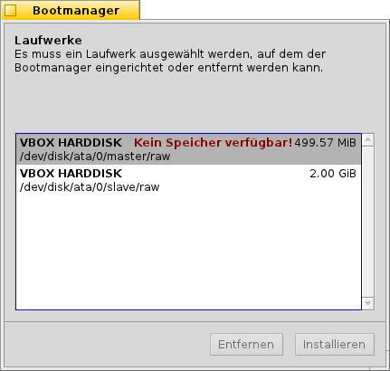
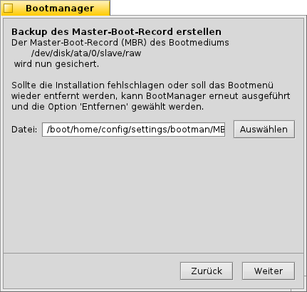
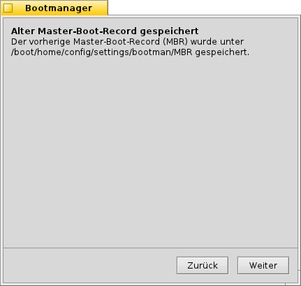
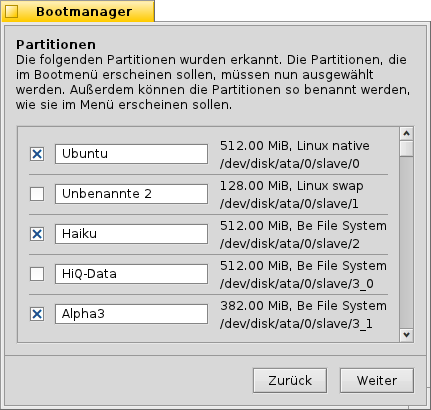
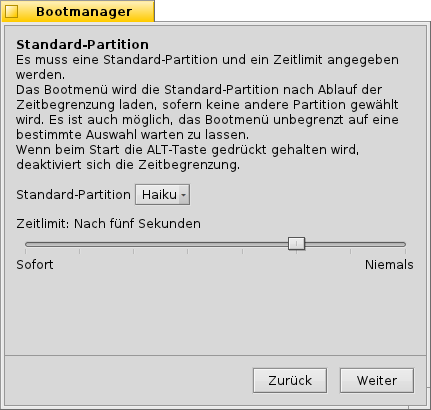
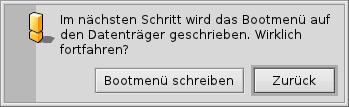
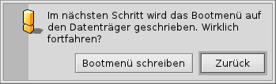

Deutsch
Deutsch Català
Català English
English Español
Español Français
Français Italiano
Italiano Magyar
Magyar Polski
Polski Português
Português Português (Brazil)
Português (Brazil) Română
Română Slovenčina
Slovenčina Suomi
Suomi Svenska
Svenska 中文 ［中文］
中文 ［中文］ Русский
Русский Українська
Українська 日本語
日本語 Bootmanager
Bootmanager
| Deskbar: | Kein Eintrag, wird üblicherweise im Menü des Installers aufgerufen | |
| Ort: | /boot/system/apps/BootManager | |
| Einstellungen: | keine Eine Sicherung des MBR wird standardmäßig in ~/config/settings/bootman/ gespeichert |
Wird die Haiku-Partition nicht zu einem bereits installierten Bootmanager wie GRUB hinzugefügt, kann der Haiku Bootmanager ein einfaches Bootmenü im MBR (Master Boot Record) anlegen, das etwa so aussieht:

Der Bootmanager führt durch den Installationsprozess des Bootmenüs.
 Auswählen des Ziellaufwerks
Auswählen des Ziellaufwerks

Aus einer Liste aller verfügbaren Laufwerke wird das gewünschte Ziel ausgewählt. Falls auf diesem Laufwerk bereits ein Bootmenü existiert, kann mit auf einfache Weise ein zuvor gesichertes Backup des MBR wiederhergestellt werden, wodurch das Bootmenü wieder entfernt wird.
Ansonsten kann mit der Installationsprozess fortgesetzt werden.
Sichern des MBR (Master Boot Record)
Für den Fall, dass etwas schief geht oder das Bootmenü später wieder entfernt werden soll, wird nun der Master Boot Record (MBR) gesichert - offensichtich ein äußerst wichtiger Schritt. Man sollte daher sichergehen, dass nicht aus Versehen ein älteres Backup des MBR (gesichert beispielsweise bei früherem Herumexperimentieren) überschrieben wird!
 Der Standardpfad für die Sicherungsdatei "MBR" kann beibehalten oder ein neues Zielverzeichnis angegeben werden. Ein Klick auf liefert eine Bestätigung, ob die Sicherung erfolgreich war.
Konfigurieren des Bootmenüs


Als nächstes wird eine Liste aller Partitionen des Ziellaufwerks ausgegeben. Die markierten Partitionen werden unter den in den jeweiligen Textfeldern angegebenen Bezeichnungen als Einträge ins Bootmenü übernommen. Durch Entfernen/Setzen von Haken und Umbennen der Einträge kann ein individuell angepasstes Bootmenü zusammengestellt werden.
Anschließend wird aus dem Auswahlmenü die Partition gewählt, von der standardmäßig gebootet wird. Ein Zeitlimit wird mit dem Schieberegler darunter eingestellt. Dabei bedeutet "Sofort", dass gar kein Bootmenü angezeigt wird, "Niemals", dass der Bootvorgang beim Bootmenü angehalten wird. Hält man beim Booten ALT gedrückt, lässt sich die Zeitbegrenzung deaktivieren.
Schreiben des Bootmenüs
 

Bevor das Bootmenü in den MBR geschrieben wird, werden alle Einstellungen noch einmal zusammengefasst. Danach besteht die letzte Möglichkeit, die Operation doch noch abzubrechen. Aber keine Sorge, solange die Sicherung des MBR nicht gelöscht wird, können die Änderungen rückgängig gemacht werden. Sollte etwas schiefgehen, kann jederzeit von einer Haiku-Installations-CD oder einem USB-Stick gebootet werden, um die Sicherung des MBR mittels Bootmanager zurückzuschreiben.